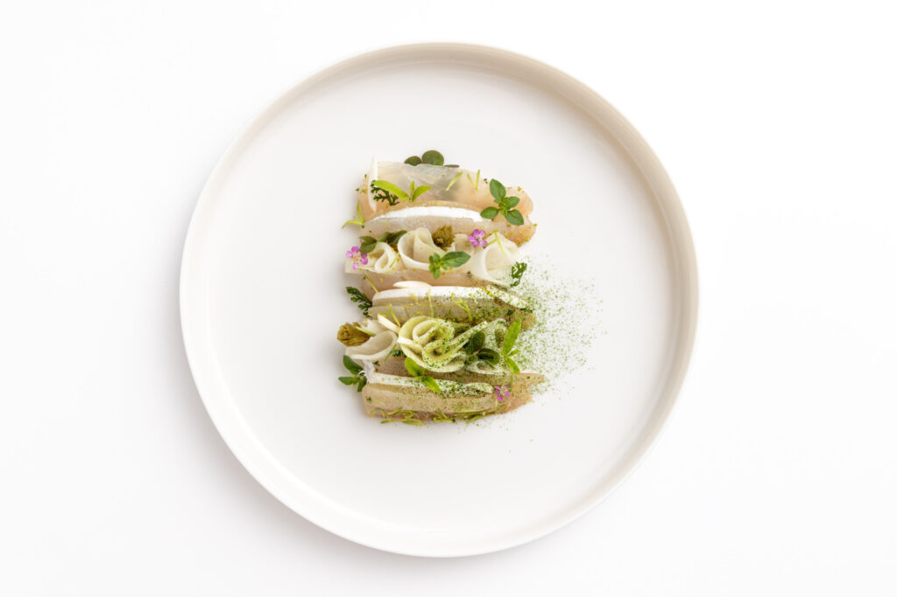

<style>
  :root {
    --paper: #f3ead6;
    --paper-deep: #ebe0c4;
    --ink: #1f1a14;
    --ink-soft: #4a3f30;
    --rule: #b8a679;
    --swiss-red: #c8102e;
    --vine: #4d6b3a;
    --lake: #2b5874;
    --gold: #a78544;
    --crease: rgba(120, 95, 55, 0.18);
  }

  .itin {
    margin: 0;
    background:
      radial-gradient(ellipse at 10% 0%, rgba(255, 250, 235, 0.55), transparent 55%),
      radial-gradient(ellipse at 90% 100%, rgba(180, 150, 90, 0.18), transparent 60%),
      var(--paper);
    color: var(--ink);
    font-family: "Source Serif Pro", "Iowan Old Style", Georgia, serif;
    font-size: 16px;
    line-height: 1.55;
    position: relative;
    overflow: hidden;
  }
  .itin::before {
    content: "";
    position: absolute;
    inset: 0;
    pointer-events: none;
    background-image:
      linear-gradient(90deg, transparent calc(33.33% - 0.5px), var(--crease) 33.33%, transparent calc(33.33% + 0.5px)),
      linear-gradient(90deg, transparent calc(66.66% - 0.5px), var(--crease) 66.66%, transparent calc(66.66% + 0.5px));
    background-size: 100% 100%;
    opacity: 0.55;
    mix-blend-mode: multiply;
    z-index: 1;
  }
  .itin > * { position: relative; z-index: 2; }

  .sans { font-family: "Helvetica Neue", Inter, "Arial Narrow", sans-serif; }
  .mono { font-family: "JetBrains Mono", ui-monospace, SFMono-Regular, Menlo, monospace; }
  .display { font-family: "Playfair Display", "Iowan Old Style", Georgia, serif; }

  /* ── Cover band ─────────────────────────────────── */
  .cover {
    position: relative;
    padding: 3.5rem 3rem 2.5rem;
    border-bottom: 1px solid var(--rule);
    background:
      linear-gradient(180deg, rgba(243, 234, 214, 0) 60%, rgba(243, 234, 214, 0.85) 100%),
      url("itinerary-card/images/lavaux.jpg") center/cover no-repeat,
      var(--paper-deep);
    color: var(--ink);
    min-height: 360px;
  }
  .cover::after {
    content: "";
    position: absolute; inset: 0;
    background: linear-gradient(180deg, rgba(243, 234, 214, 0.15), rgba(243, 234, 214, 0.5) 70%, rgba(243, 234, 214, 0.95));
    pointer-events: none;
  }
  .cover-inner {
    position: relative;
    z-index: 3;
    display: grid;
    grid-template-columns: 1fr auto;
    gap: 2rem;
    align-items: end;
  }
  .cover-eyebrow {
    font-family: "Helvetica Neue", Inter, sans-serif;
    text-transform: uppercase;
    letter-spacing: 0.32em;
    font-size: 0.7rem;
    font-weight: 700;
    color: var(--ink-soft);
    margin-bottom: 1rem;
  }
  .cover-title {
    font-family: "Playfair Display", "Iowan Old Style", Georgia, serif;
    font-weight: 900;
    font-size: clamp(2.6rem, 5.5vw, 4.6rem);
    line-height: 0.97;
    margin: 0;
    letter-spacing: -0.01em;
    color: var(--ink);
    text-shadow: 0 1px 0 rgba(255, 245, 220, 0.7);
  }
  .cover-title .underline {
    display: inline-block;
    border-bottom: 6px solid var(--swiss-red);
    padding-bottom: 4px;
  }
  .cover-sub {
    margin-top: 0.7rem;
    font-style: italic;
    font-size: 1.1rem;
    color: var(--ink-soft);
    max-width: 36ch;
  }
  /* Stamp */
  .stamp {
    border: 2px solid var(--swiss-red);
    color: var(--swiss-red);
    padding: 0.85rem 1.1rem;
    text-align: center;
    transform: rotate(-4deg);
    background: rgba(255, 250, 235, 0.7);
    box-shadow: 0 1px 0 rgba(0, 0, 0, 0.06);
    width: 160px;
    font-family: "Helvetica Neue", Inter, sans-serif;
  }
  .stamp .cross {
    font-size: 2.4rem;
    line-height: 0.8;
    font-weight: 700;
    margin-bottom: 0.2rem;
  }
  .stamp .stamp-label {
    text-transform: uppercase;
    letter-spacing: 0.2em;
    font-size: 0.65rem;
    font-weight: 700;
  }
  .stamp .stamp-date {
    border-top: 1px dashed var(--swiss-red);
    margin-top: 0.4rem;
    padding-top: 0.3rem;
    font-size: 0.85rem;
    letter-spacing: 0.1em;
  }

  /* Postmark */
  .postmark {
    position: absolute;
    top: 1.6rem;
    right: 2rem;
    z-index: 3;
    color: var(--ink-soft);
    opacity: 0.5;
    transform: rotate(8deg);
    text-align: center;
    border: 1.5px solid var(--ink-soft);
    border-radius: 50%;
    width: 96px;
    height: 96px;
    display: flex;
    align-items: center;
    justify-content: center;
    flex-direction: column;
    font-family: "Helvetica Neue", Inter, sans-serif;
    font-size: 0.55rem;
    letter-spacing: 0.15em;
    text-transform: uppercase;
    line-height: 1.2;
  }
  .postmark::before, .postmark::after {
    content: "";
    position: absolute;
    left: 8%;
    right: 8%;
    border-top: 1px solid var(--ink-soft);
  }
  .postmark::before { top: 30%; }
  .postmark::after { bottom: 30%; }

  /* ── Section wrapper ───────────────────────────── */
  .band {
    padding: 2.4rem 3rem;
    border-bottom: 1px solid var(--rule);
  }
  .band:last-of-type { border-bottom: none; }
  .band-head {
    display: flex;
    align-items: baseline;
    gap: 1rem;
    margin-bottom: 1.4rem;
    font-family: "Helvetica Neue", Inter, sans-serif;
  }
  .band-num {
    font-weight: 800;
    font-size: 1.6rem;
    color: var(--swiss-red);
    letter-spacing: 0.05em;
  }
  .band-title {
    font-family: "Playfair Display", Georgia, serif;
    font-size: 1.6rem;
    font-weight: 700;
    margin: 0;
    letter-spacing: -0.01em;
  }
  .band-kicker {
    margin-left: auto;
    text-transform: uppercase;
    letter-spacing: 0.25em;
    font-size: 0.65rem;
    color: var(--ink-soft);
    font-weight: 700;
  }

  /* ── Day-shape callout ─────────────────────────── */
  .shape {
    border: 1.5px dashed var(--ink-soft);
    padding: 1.4rem 1.6rem;
    background: rgba(255, 248, 226, 0.6);
    display: grid;
    grid-template-columns: auto 1fr;
    gap: 1.2rem;
    align-items: center;
  }
  .shape-icon {
    font-family: "Playfair Display", serif;
    font-size: 3.4rem;
    color: var(--swiss-red);
    line-height: 1;
  }
  .shape p { margin: 0; font-size: 1rem; }
  .shape strong { font-variant-caps: small-caps; letter-spacing: 0.06em; }

  /* ── Timeline ──────────────────────────────────── */
  .timeline {
    display: grid;
    grid-template-columns: 4.5rem 1fr;
    gap: 0 1.2rem;
    position: relative;
  }
  .timeline::before {
    content: "";
    position: absolute;
    left: 4.5rem;
    top: 0.4rem;
    bottom: 0.4rem;
    width: 2px;
    background: repeating-linear-gradient(180deg, var(--rule) 0 6px, transparent 6px 10px);
  }
  .t-hour {
    font-family: "JetBrains Mono", monospace;
    color: var(--ink-soft);
    font-size: 0.85rem;
    padding-top: 0.5rem;
    text-align: right;
    padding-right: 0.4rem;
  }
  .t-row {
    display: contents;
  }
  .t-event {
    padding: 0.45rem 0 1.1rem 1.3rem;
    position: relative;
  }
  .t-event::before {
    content: "";
    position: absolute;
    left: -8px;
    top: 0.95rem;
    width: 14px;
    height: 14px;
    border-radius: 50%;
    background: var(--paper);
    border: 2.5px solid var(--vine);
  }
  .t-event.lake::before { border-color: var(--lake); }
  .t-event.muse::before { border-color: var(--gold); }
  .t-event.foot::before { border-color: var(--ink-soft); }
  .t-event.anchor::before {
    background: var(--swiss-red);
    border-color: var(--swiss-red);
    width: 18px;
    height: 18px;
    left: -10px;
    top: 0.85rem;
    box-shadow: 0 0 0 4px rgba(200, 16, 46, 0.18);
  }
  .t-event h4 {
    margin: 0 0 0.15rem;
    font-family: "Playfair Display", Georgia, serif;
    font-size: 1.05rem;
    font-weight: 700;
  }
  .t-event .where {
    font-family: "Helvetica Neue", Inter, sans-serif;
    font-size: 0.72rem;
    text-transform: uppercase;
    letter-spacing: 0.18em;
    color: var(--ink-soft);
    margin-bottom: 0.35rem;
  }
  .t-event p {
    margin: 0;
    font-size: 0.93rem;
    color: var(--ink);
  }
  .t-event .anchor-tag {
    display: inline-block;
    background: var(--swiss-red);
    color: #fff8e7;
    font-family: "Helvetica Neue", Inter, sans-serif;
    font-size: 0.62rem;
    font-weight: 800;
    letter-spacing: 0.22em;
    padding: 2px 8px;
    margin-right: 0.5rem;
    vertical-align: middle;
  }

  /* Saturday/Sunday split */
  .days {
    display: grid;
    grid-template-columns: 1fr 1fr;
    gap: 2.2rem;
  }
  .day {
    padding: 0;
  }
  .day-head {
    display: flex;
    align-items: baseline;
    gap: 0.8rem;
    border-bottom: 2px solid var(--ink);
    padding-bottom: 0.5rem;
    margin-bottom: 1.2rem;
  }
  .day-name {
    font-family: "Playfair Display", serif;
    font-weight: 900;
    font-size: 2.4rem;
    line-height: 1;
    letter-spacing: -0.02em;
  }
  .day-date {
    font-family: "JetBrains Mono", monospace;
    font-size: 0.85rem;
    color: var(--ink-soft);
  }
  .day-mark {
    margin-left: auto;
    font-family: "Helvetica Neue", Inter, sans-serif;
    text-transform: uppercase;
    font-size: 0.65rem;
    letter-spacing: 0.22em;
    font-weight: 800;
  }
  .day.saturday .day-mark { color: var(--swiss-red); }
  .day.sunday .day-mark { color: var(--ink-soft); }

  /* ── Anchor card row ──────────────────────────── */
  .anchors {
    display: grid;
    grid-template-columns: repeat(3, 1fr);
    gap: 1.4rem;
  }
  .anchor-card {
    border: 1px solid var(--rule);
    background: rgba(255, 250, 235, 0.85);
    display: flex;
    flex-direction: column;
    box-shadow: 0 1px 0 rgba(0, 0, 0, 0.04), 0 2px 8px rgba(120, 90, 40, 0.07);
  }
  .anchor-photo {
    height: 140px;
    background: linear-gradient(135deg, #6a5836, #382c1b);
    color: rgba(255, 240, 200, 0.65);
    font-family: "Playfair Display", serif;
    display: flex;
    align-items: center;
    justify-content: center;
    font-size: 1.4rem;
    letter-spacing: 0.1em;
  }
  .anchor-photo img {
    width: 100%; height: 100%; object-fit: cover;
    display: block;
  }
  .anchor-body { padding: 1rem 1.1rem 1.2rem; flex: 1; }
  .anchor-head { display: flex; align-items: baseline; gap: 0.5rem; margin-bottom: 0.4rem; }
  .anchor-name {
    font-family: "Playfair Display", serif;
    font-size: 1.15rem;
    font-weight: 700;
    margin: 0;
  }
  .anchor-name a { color: var(--ink); text-decoration: none; border-bottom: 1px solid var(--rule); }
  .anchor-name a:hover { border-bottom-color: var(--swiss-red); }
  .stars {
    font-family: "Helvetica Neue", Inter, sans-serif;
    font-size: 0.9rem;
    color: var(--swiss-red);
    letter-spacing: 0.1em;
    margin-left: auto;
  }
  .anchor-meta {
    font-family: "JetBrains Mono", monospace;
    font-size: 0.74rem;
    color: var(--ink-soft);
    margin-bottom: 0.6rem;
    display: grid;
    grid-template-columns: auto 1fr;
    gap: 0.3rem 0.7rem;
    line-height: 1.4;
  }
  .anchor-feel {
    font-size: 0.92rem;
    font-style: italic;
    color: var(--ink);
    padding-top: 0.6rem;
    border-top: 1px dashed var(--rule);
    margin-top: 0.4rem;
  }

  /* ── Lavaux insert ──────────────────────────── */
  .lavaux {
    display: grid;
    grid-template-columns: 1fr 1fr;
    gap: 2rem;
    align-items: stretch;
  }
  .lavaux-photo {
    aspect-ratio: 4/3;
    background-size: cover;
    background-position: center;
    border: 1px solid var(--rule);
  }
  .lavaux-body h3 {
    font-family: "Playfair Display", serif;
    font-size: 1.6rem;
    font-weight: 700;
    margin: 0 0 0.5rem;
    line-height: 1.1;
  }
  .lavaux-route {
    display: grid;
    grid-template-columns: repeat(4, 1fr);
    gap: 0;
    margin: 1.2rem 0;
    border: 1px solid var(--vine);
    background: rgba(255, 248, 226, 0.5);
  }
  .lavaux-route div {
    padding: 0.7rem 0.5rem;
    text-align: center;
    border-right: 1px dashed var(--vine);
  }
  .lavaux-route div:last-child { border-right: none; }
  .lavaux-route .big {
    display: block;
    font-family: "Playfair Display", serif;
    font-size: 1.4rem;
    font-weight: 800;
    color: var(--vine);
    line-height: 1;
  }
  .lavaux-route .lbl {
    display: block;
    margin-top: 0.25rem;
    font-family: "Helvetica Neue", Inter, sans-serif;
    font-size: 0.6rem;
    letter-spacing: 0.18em;
    text-transform: uppercase;
    color: var(--ink-soft);
  }
  .route-arrow {
    margin: 0.8rem 0;
    font-family: "JetBrains Mono", monospace;
    color: var(--vine);
    letter-spacing: 0.05em;
  }

  /* ── Map sketch ─────────────────────────────── */
  .map {
    background: rgba(255, 248, 226, 0.55);
    border: 1px solid var(--rule);
    padding: 1.4rem 1.6rem;
    position: relative;
  }
  .map h3 {
    margin: 0 0 0.7rem;
    font-family: "Playfair Display", serif;
    font-size: 1.25rem;
  }
  .map-svg-wrap {
    overflow: visible;
  }
  .map-legend {
    font-family: "Helvetica Neue", Inter, sans-serif;
    font-size: 0.7rem;
    color: var(--ink-soft);
    text-transform: uppercase;
    letter-spacing: 0.15em;
    margin-top: 0.6rem;
    display: flex;
    gap: 1.2rem;
    flex-wrap: wrap;
  }
  .map-legend span::before {
    content: "●";
    margin-right: 0.3rem;
    color: var(--swiss-red);
  }
  .map-legend .lake-dot::before { color: var(--lake); }
  .map-legend .vine-dot::before { color: var(--vine); }
  .map-legend .gold-dot::before { color: var(--gold); }

  /* ── Side note (transit) ─────────────────── */
  .transit {
    display: grid;
    grid-template-columns: 1fr 1fr;
    gap: 1.4rem;
    align-items: stretch;
  }
  .transit-card {
    border-left: 5px solid var(--swiss-red);
    background: rgba(255, 248, 226, 0.55);
    padding: 1.1rem 1.3rem;
  }
  .transit-card.gray { border-left-color: var(--ink-soft); background: rgba(225, 215, 195, 0.45); }
  .transit-card h4 {
    margin: 0 0 0.4rem;
    font-family: "Playfair Display", serif;
    font-size: 1.1rem;
  }
  .transit-card p { margin: 0; font-size: 0.93rem; }
  .transit-card .small {
    font-family: "Helvetica Neue", Inter, sans-serif;
    text-transform: uppercase;
    letter-spacing: 0.2em;
    font-size: 0.6rem;
    color: var(--ink-soft);
    font-weight: 700;
    display: block;
    margin-bottom: 0.3rem;
  }

  /* ── Tech-gap strip ───────────────────────── */
  .tech-gap {
    background: #2a241a;
    color: #e6dabb;
    padding: 1.4rem 1.6rem;
    display: grid;
    grid-template-columns: 1fr 2fr;
    gap: 1.6rem;
    align-items: center;
  }
  .tech-gap h3 {
    margin: 0;
    font-family: "Playfair Display", serif;
    font-size: 1.4rem;
    color: #fff5d8;
  }
  .tech-gap small {
    display: block;
    font-family: "Helvetica Neue", Inter, sans-serif;
    text-transform: uppercase;
    letter-spacing: 0.25em;
    font-size: 0.6rem;
    color: #c8b785;
    margin-top: 0.2rem;
  }
  .tech-cal {
    display: grid;
    grid-template-columns: repeat(6, 1fr);
    gap: 4px;
    align-items: end;
  }
  .tech-cal .m {
    padding: 0.5rem 0.2rem 0.3rem;
    text-align: center;
    background: rgba(255, 255, 255, 0.04);
    border-bottom: 2px solid transparent;
    font-family: "JetBrains Mono", monospace;
    font-size: 0.65rem;
    color: #b5a880;
  }
  .tech-cal .m.has {
    background: #6b3a1d;
    color: #fff5d8;
    border-bottom-color: var(--gold);
  }
  .tech-cal .m.weekend {
    background: var(--swiss-red);
    color: #fff8e7;
    border-bottom-color: #fff8e7;
  }
  .tech-cal .m strong {
    display: block;
    font-family: "Playfair Display", serif;
    font-size: 0.95rem;
    font-weight: 700;
  }

  /* ── Children rail ─────────────────────────── */
  .children {
    display: grid;
    grid-template-columns: repeat(3, 1fr);
    gap: 1.2rem;
  }
  .child-card {
    border: 1px solid var(--rule);
    padding: 1rem 1.1rem 1.1rem;
    text-decoration: none;
    color: var(--ink);
    background: rgba(255, 250, 235, 0.65);
    display: flex;
    flex-direction: column;
    transition: background 0.15s;
  }
  .child-card:hover { background: rgba(255, 245, 218, 0.9); }
  .child-card .depth {
    font-family: "Helvetica Neue", Inter, sans-serif;
    font-size: 0.58rem;
    letter-spacing: 0.25em;
    text-transform: uppercase;
    color: var(--swiss-red);
    margin-bottom: 0.4rem;
    font-weight: 800;
  }
  .child-card h4 {
    margin: 0 0 0.4rem;
    font-family: "Playfair Display", serif;
    font-size: 1.05rem;
    font-weight: 700;
    line-height: 1.2;
  }
  .child-card p {
    margin: 0;
    font-size: 0.85rem;
    color: var(--ink-soft);
    flex: 1;
  }

  /* ── Sources strip ──────────────────────────── */
  .sources-strip {
    background: var(--paper-deep);
    padding: 1.6rem 3rem 2.2rem;
    border-top: 1px solid var(--rule);
  }
  .sources-strip h3 {
    font-family: "Helvetica Neue", Inter, sans-serif;
    text-transform: uppercase;
    letter-spacing: 0.3em;
    font-size: 0.7rem;
    font-weight: 800;
    color: var(--ink-soft);
    margin: 0 0 1rem;
  }
  .src-grid {
    display: grid;
    grid-template-columns: repeat(auto-fit, minmax(220px, 1fr));
    gap: 0.6rem 1rem;
  }
  .src {
    display: grid;
    grid-template-columns: 18px 1fr;
    gap: 0.6rem;
    align-items: center;
    font-size: 0.78rem;
    color: var(--ink-soft);
    text-decoration: none;
    padding: 0.3rem 0;
    border-bottom: 1px dotted var(--rule);
  }
  .src:hover { color: var(--ink); }
  .src img { width: 16px; height: 16px; }
  .src .n {
    color: var(--swiss-red);
    font-family: "JetBrains Mono", monospace;
    font-size: 0.7rem;
    margin-right: 0.3rem;
  }

  /* Colophon */
  .colophon {
    padding: 1.4rem 3rem 2.2rem;
    font-family: "Helvetica Neue", Inter, sans-serif;
    font-size: 0.7rem;
    letter-spacing: 0.18em;
    text-transform: uppercase;
    color: var(--ink-soft);
    text-align: center;
    border-top: 1px dashed var(--rule);
  }
  .colophon a {
    color: var(--swiss-red);
    text-decoration: none;
    border-bottom: 1px solid var(--swiss-red);
  }

  /* Inline citations in body */
  .itin sup { font-size: 0.6rem; }
  .itin sup a {
    color: var(--swiss-red);
    text-decoration: none;
    font-family: "JetBrains Mono", monospace;
  }
  .itin sup a:hover { text-decoration: underline; }

  /* Inline entity links */
  .itin a.ent { color: var(--ink); border-bottom: 1px solid var(--rule); text-decoration: none; }
  .itin a.ent:hover { border-bottom-color: var(--swiss-red); }

  @media (max-width: 820px) {
    .cover, .band, .sources-strip, .colophon { padding-left: 1.4rem; padding-right: 1.4rem; }
    .cover-inner { grid-template-columns: 1fr; }
    .days, .anchors, .lavaux, .transit, .children, .tech-gap { grid-template-columns: 1fr; }
    .postmark { display: none; }
    .itin::before { display: none; }
  }
</style>

<article class="itin">

  <!-- ── COVER ────────────────────────────── -->
  <header class="cover">
    <div class="postmark">
      Lausanne<br>29 V<br>2026
    </div>
    <div class="cover-inner">
      <div>
        <div class="cover-eyebrow">Vaud · Switzerland · 29–31 May 2026</div>
        <h1 class="cover-title">A Weekend in<br><span class="underline">Lausanne</span>,<br>anchored on a<br>Michelin dinner.</h1>
        <p class="cover-sub">Three star-rated tables within 7 km. Lavaux in the afternoon. Plateforme 10 on Sunday. The restaurant pick drives the day.</p>
      </div>
      <div class="stamp">
        <div class="cross">✦</div>
        <div class="stamp-label">Saturday<br>is the anchor</div>
        <div class="stamp-date">RESERVE TUE–SAT</div>
      </div>
    </div>
  </header>

  <!-- ── THE DAY-SHAPE CONSTRAINT ────────── -->
  <section class="band">
    <div class="band-head">
      <span class="band-num">01</span>
      <h2 class="band-title">The day-shape that ties it together</h2>
      <span class="band-kicker">Constraint · ★ ★ ★</span>
    </div>
    <div class="shape">
      <div class="shape-icon">✦</div>
      <p>
        All three Michelin tables run <strong>Tue–Sat</strong>, so Saturday dinner works at any of them — but <strong>none open Sunday dinner</strong>, and only <a class="ent" href="https://www.anne-sophie-pic.com/en/pic-at-the-beau-rivage-palace">Pic</a> adds a Sunday lunch from 19 April 2026 <sup><a href="https://www.anne-sophie-pic.com/en/pic-at-the-beau-rivage-palace">[3]</a><a href="https://www.restaurantcrissier.com/en/">[4]</a><a href="https://www.lausanne-palace.ch/en/restaurants-bars/la-table-du-lausanne-palace/le-restaurant/">[5]</a></sup>. Saturday becomes the anchored day; Sunday is freer and ends without a marquee meal. ⚠ A Sunday-anchored weekend narrows the pick to Pic's Sunday lunch.
      </p>
    </div>
  </section>

  <!-- ── SATURDAY & SUNDAY ───────────────── -->
  <section class="band">
    <div class="band-head">
      <span class="band-num">02</span>
      <h2 class="band-title">Saturday, Sunday — the day, hour by hour</h2>
      <span class="band-kicker">Itinerary · two days</span>
    </div>

    <div class="days">

      <!-- SATURDAY -->
      <div class="day saturday">
        <div class="day-head">
          <span class="day-name">Sat</span>
          <span class="day-date">30 V 2026</span>
          <span class="day-mark">★ Anchored 19:00</span>
        </div>

        <div class="timeline">

          <div class="t-row">
            <div class="t-hour">09:30</div>
            <div class="t-event lake">
              <h4><a class="ent" href="https://www.lausanne-tourisme.ch/en/explore/ouchy/">Ouchy</a> lakefront walk</h4>
              <div class="where">M2 → Ouchy · CHF 0 (Transport Card)</div>
              <p>Tree-lined quays opened in 1901 — Haldimand tower past Château d'Ouchy, 130+ rose species at Place du Général Guisan <sup><a href="https://www.lausanne-tourisme.ch/en/explore/ouchy/">[21]</a></sup>. M2 climbs back at an 11.6 % gradient <sup><a href="https://en.wikipedia.org/wiki/M%C3%A9tro_Lausanne%E2%80%93Ouchy">[2]</a></sup>.</p>
            </div>
          </div>

          <div class="t-row">
            <div class="t-hour">11:30</div>
            <div class="t-event muse">
              <h4>Coffee + short walk in the old town</h4>
              <div class="where">Funicular up · cathedral square</div>
              <p>The activities child notes Lausanne is "not an easy walking city" because of three steep hills <sup><a href="https://tourismattractions.net/switzerland/lausanne-attraction-walkability-guide">[10]</a></sup> — neutralised by M2 + funiculars.</p>
            </div>
          </div>

          <div class="t-row">
            <div class="t-hour">13:00</div>
            <div class="t-event foot">
              <h4>Train to St-Saphorin</h4>
              <div class="where">SBB R4 · ~12 min · every 15 min</div>
              <p>SBB regional trains link Lausanne to the Lavaux villages in 8–10 min <sup><a href="https://www.rome2rio.com/s/Lausanne/Cully">[7]</a></sup>.</p>
            </div>
          </div>

          <div class="t-row">
            <div class="t-hour">13:30</div>
            <div class="t-event">
              <h4>Lavaux Route 113, downhill</h4>
              <div class="where">St-Saphorin → Lutry · 11.6 km · ~4 h</div>
              <p>Mostly downhill from 200 m elevation through the UNESCO terraces — finishes at Lutry station, 8–10 min back to Lausanne <sup><a href="https://swissfamilyfun.com/lavaux-vineyard-hike/">[6]</a><a href="https://www.rome2rio.com/s/Lausanne/Cully">[7]</a></sup>. Enough margin to shower and make 19:00.</p>
            </div>
          </div>

          <div class="t-row">
            <div class="t-hour">17:30</div>
            <div class="t-event foot">
              <h4>Return · change · breathe</h4>
              <div class="where">Hotel · ~60 min</div>
              <p>Shower, dress. Transport Card covers the SBB hop back from Lutry <sup><a href="https://www.lausanne-tourisme.ch/en/lausanne-transport-card-and-more/">[9]</a></sup>.</p>
            </div>
          </div>

          <div class="t-row">
            <div class="t-hour">19:00</div>
            <div class="t-event anchor">
              <h4><span class="anchor-tag">ANCHOR</span> Michelin dinner</h4>
              <div class="where">Crissier / Pic / La Table — your pick</div>
              <p>Crissier sits 7 min by SBB from the main station <sup><a href="https://www.rome2rio.com/s/Lausanne-Station/Crissier">[1]</a></sup>; Pic and La Table are in town. See the three cards below.</p>
            </div>
          </div>

          <div class="t-row">
            <div class="t-hour">22:30</div>
            <div class="t-event lake">
              <h4>Cathedral watchman, if awake</h4>
              <div class="where">Old town · le guet calls 22:00–02:00</div>
              <p>Nightly tradition since 1405 — the watchman calls the hours from the belfry <sup><a href="https://www.lausanne-tourisme.ch/en/explore/lausanne-cathedral/">[19]</a></sup>.</p>
            </div>
          </div>

        </div>
      </div>

      <!-- SUNDAY -->
      <div class="day sunday">
        <div class="day-head">
          <span class="day-name">Sun</span>
          <span class="day-date">31 V 2026</span>
          <span class="day-mark">No marquee meal</span>
        </div>

        <div class="timeline">

          <div class="t-row">
            <div class="t-hour">10:00</div>
            <div class="t-event muse">
              <h4><a class="ent" href="https://plateforme10.ch/en/tickets/">Plateforme 10</a></h4>
              <div class="where">Beside Lausanne station · CHF 25 combined</div>
              <p>25,000 m² arts district — MCBA (fine arts), Photo Elysée, mudac. Combined 3-museum ticket CHF 25 / 19 reduced, single CHF 15 <sup><a href="https://plateforme10.ch/en/tickets/">[18]</a></sup>.</p>
            </div>
          </div>

          <div class="t-row">
            <div class="t-hour">12:30</div>
            <div class="t-event foot">
              <h4>Fondue in the old town</h4>
              <div class="where">Place de la Palud area</div>
              <p>Sunday brunch & lunch hold; the canonical leaves this open — pick by walk-by appetite.</p>
            </div>
          </div>

          <div class="t-row">
            <div class="t-hour">14:30</div>
            <div class="t-event">
              <h4>Cathedral + belfry climb</h4>
              <div class="where">Open until 19:00 · CHF 6 (free under 25)</div>
              <p>Switzerland's finest Gothic edifice; tower views <sup><a href="https://www.lausanne-tourisme.ch/en/explore/lausanne-cathedral/">[19]</a></sup>.</p>
            </div>
          </div>

          <div class="t-row">
            <div class="t-hour">16:00</div>
            <div class="t-event lake">
              <h4>CGN paddle-steamer (option)</h4>
              <div class="where">Ouchy · La Suisse · ~3 h loop</div>
              <p>A 1910 Belle Époque steamer; the Lavaux/Chillon loop runs ~3 hours <sup><a href="https://www.cgn.ch/en/la-suisse.html">[8]</a></sup> — fits a no-anchor afternoon, tighter on a Michelin day.</p>
            </div>
          </div>

          <div class="t-row">
            <div class="t-hour">18:30</div>
            <div class="t-event foot">
              <h4>Sunset, slow exit</h4>
              <div class="where">Ouchy quay · Savoy Alps across the lake</div>
              <p>No marquee dinner. Pic offers a Sunday lunch from 19 April 2026 if you want the meal on Sunday instead <sup><a href="https://www.anne-sophie-pic.com/en/pic-at-the-beau-rivage-palace">[3]</a></sup>.</p>
            </div>
          </div>

        </div>
      </div>

    </div>
  </section>

  <!-- ── THREE ANCHORS ─────────────────────── -->
  <section class="band">
    <div class="band-head">
      <span class="band-num">03</span>
      <h2 class="band-title">The three anchors</h2>
      <span class="band-kicker">All within 7 km of Lausanne station</span>
    </div>

    <div class="anchors">

      <div class="anchor-card">
        <div class="anchor-photo">CRISSIER</div>
        <div class="anchor-body">
          <div class="anchor-head">
            <h3 class="anchor-name"><a href="https://www.restaurantcrissier.com/en/">Restaurant de l'Hôtel de Ville</a></h3>
            <span class="stars">★★★</span>
          </div>
          <div class="anchor-meta">
            <span>WHERE</span><span>Crissier · 7 min by SBB <sup><a href="https://www.rome2rio.com/s/Lausanne-Station/Crissier">[1]</a></sup></span>
            <span>HOURS</span><span>Tue–Sat · L 12:00 · D 19:00–20:30</span>
            <span>FROM</span><span>CHF 260 quick lunch / 360 discovery / 410 gastro</span>
            <span>LINEAGE</span><span>Girardet → Rochat → Violier → Giovannini</span>
          </div>
          <p class="anchor-feel">Quiet western suburb. 30-year three-star legacy <sup><a href="https://www.lausanne-tourisme.ch/en/guide-michelin-switzerland/">[15]</a></sup>. The room is the institution.</p>
        </div>
      </div>

      <div class="anchor-card">
        <div class="anchor-photo"></div>
        <div class="anchor-body">
          <div class="anchor-head">
            <h3 class="anchor-name"><a href="https://www.anne-sophie-pic.com/en/pic-at-the-beau-rivage-palace">Pic at Beau-Rivage Palace</a></h3>
            <span class="stars">★★</span>
          </div>
          <div class="anchor-meta">
            <span>WHERE</span><span>Ouchy lakefront · M2 to Ouchy</span>
            <span>HOURS</span><span>Tue–Sat dinner · + Sunday lunch from 19 Apr 2026</span>
            <span>FROM</span><span>CHF 120 Viarhôna / 210 Interlude / 330 Coast / 390 Summit</span>
            <span>SIGNATURE</span><span>ASP Berlingots · Féra du Lac Léman</span>
          </div>
          <p class="anchor-feel">Floral cuisine on Lac Léman produce <sup><a href="https://www.anne-sophie-pic.com/en/pic-at-the-beau-rivage-palace">[3]</a></sup>. Window seats look at the lake. The only Sunday option.</p>
        </div>
      </div>

      <div class="anchor-card">
        <div class="anchor-photo">LA TABLE</div>
        <div class="anchor-body">
          <div class="anchor-head">
            <h3 class="anchor-name"><a href="https://www.lausanne-palace.ch/en/restaurants-bars/la-table-du-lausanne-palace/le-restaurant/">La Table du Lausanne Palace</a></h3>
            <span class="stars">★★</span>
          </div>
          <div class="anchor-meta">
            <span>WHERE</span><span>City centre · Rue du Grand Chêne 7-9</span>
            <span>HOURS</span><span>Dinner Wed–Sat 19:00–23:00 (last order 20:00)</span>
            <span>CHEF</span><span>Franck Pelux · Sarah Benahmed (dining room)</span>
            <span>VIEW</span><span>Rooftops, mountains, lake panorama</span>
          </div>
          <p class="anchor-feel">Walk-up rooftop panorama over Lausanne <sup><a href="https://www.lausanne-palace.ch/en/restaurants-bars/la-table-du-lausanne-palace/le-restaurant/">[5]</a></sup>. The city-room option.</p>
        </div>
      </div>

    </div>
  </section>

  <!-- ── LAVAUX INSERT ─────────────────────── -->
  <section class="band">
    <div class="band-head">
      <span class="band-num">04</span>
      <h2 class="band-title">Lavaux belongs on Saturday afternoon</h2>
      <span class="band-kicker">UNESCO terraces · 15 km east</span>
    </div>
    <div class="lavaux">
      <div class="lavaux-photo" style="background-image:url('itinerary-card/images/lavaux.jpg')"></div>
      <div class="lavaux-body">
        <h3>Route 113 — St-Saphorin to Lutry</h3>
        <p>The classic walk descends through Chasselas terraces overlooking Lac Léman. Finishes at a lakeside station with frequent SBB trains back to Lausanne — enough margin to shower and make a 19:00 seating.</p>

        <div class="lavaux-route">
          <div><span class="big">11.6</span><span class="lbl">km total</span></div>
          <div><span class="big">~4 h</span><span class="lbl">duration</span></div>
          <div><span class="big">200 m</span><span class="lbl">up</span></div>
          <div><span class="big">500 m</span><span class="lbl">down</span></div>
        </div>

        <p class="mono" style="font-size: 0.78rem; color: var(--ink-soft);">ST-SAPHORIN → RIVAZ → EPESSES → CULLY → LUTRY → SBB → LAUSANNE</p>

        <p style="margin-top: 0.9rem;">A <a class="ent" href="https://www.cgn.ch/en/la-suisse.html">CGN paddle-steamer</a> Lavaux/Chillon loop is tighter to fit either side of dinner at ~3 hours <sup><a href="https://www.cgn.ch/en/la-suisse.html">[8]</a></sup> — default to the steamer on a non-Michelin day. The <a class="ent" href="https://lavaux-vinorama.ch/en/wine-tour-tarifs-en/">Lavaux Vinorama</a> in Rivaz holds ~300 wines if you'd rather sit than walk <sup><a href="https://lavaux-vinorama.ch/en/wine-tour-tarifs-en/">[22]</a></sup>.</p>
      </div>
    </div>
  </section>

  <!-- ── MAP + TRANSIT ─────────────────────── -->
  <section class="band">
    <div class="band-head">
      <span class="band-num">05</span>
      <h2 class="band-title">Lausanne in 7 km · and how to move through it</h2>
      <span class="band-kicker">Free transit · M2 funicular</span>
    </div>

    <div class="transit">
      <div class="map">
        <h3>The three anchors, mapped</h3>
        <div class="map-svg-wrap">
          <svg viewBox="0 0 520 240" xmlns="http://www.w3.org/2000/svg" style="width:100%; height: auto; display: block;">
            <defs>
              <pattern id="lakePat" patternUnits="userSpaceOnUse" width="6" height="6">
                <path d="M0 5 Q1.5 3 3 5 T6 5" stroke="#9bbac9" stroke-width="0.7" fill="none" opacity="0.6"/>
              </pattern>
            </defs>
            <!-- Lake -->
            <path d="M0 165 Q140 195 280 175 T520 200 L520 240 L0 240 Z" fill="#cfe2eb"/>
            <path d="M0 165 Q140 195 280 175 T520 200 L520 240 L0 240 Z" fill="url(#lakePat)"/>
            <text x="430" y="225" font-family="Helvetica Neue, Inter, sans-serif" font-size="11" letter-spacing="3" fill="#2b5874" font-style="italic">Lac Léman</text>

            <!-- Train line west to Crissier -->
            <path d="M30 90 L160 90" stroke="#4a3f30" stroke-width="2" stroke-dasharray="6 4"/>
            <text x="40" y="80" font-family="JetBrains Mono, monospace" font-size="9" fill="#4a3f30">SBB · 7 min</text>

            <!-- M2 metro from station to Ouchy -->
            <path d="M260 90 L260 175" stroke="#c8102e" stroke-width="3"/>
            <text x="268" y="135" font-family="JetBrains Mono, monospace" font-size="9" fill="#c8102e">M2 · 11.6%</text>

            <!-- Funicular city centre -->
            <path d="M260 90 L320 65" stroke="#a78544" stroke-width="2" stroke-dasharray="2 3"/>

            <!-- Crissier -->
            <circle cx="30" cy="90" r="9" fill="#c8102e"/>
            <text x="30" y="115" font-family="Playfair Display, serif" font-size="12" text-anchor="middle" font-weight="700">Crissier</text>
            <text x="30" y="128" font-family="Helvetica Neue, sans-serif" font-size="9" letter-spacing="2" text-anchor="middle" fill="#4a3f30">★★★ · 7 km</text>

            <!-- Lausanne Station -->
            <rect x="252" y="82" width="16" height="16" fill="#1f1a14"/>
            <text x="260" y="65" font-family="Helvetica Neue, sans-serif" font-size="9" letter-spacing="2" text-anchor="middle" fill="#1f1a14">STATION</text>

            <!-- La Table (centre) -->
            <circle cx="320" cy="65" r="7" fill="#c8102e"/>
            <text x="320" y="50" font-family="Playfair Display, serif" font-size="11" text-anchor="middle" font-weight="700">La Table</text>
            <text x="320" y="35" font-family="Helvetica Neue, sans-serif" font-size="9" letter-spacing="2" text-anchor="middle" fill="#4a3f30">★★ · centre</text>

            <!-- Plateforme 10 (next to station) -->
            <circle cx="230" cy="100" r="5" fill="#a78544"/>
            <text x="220" y="116" font-family="Helvetica Neue, sans-serif" font-size="9" text-anchor="end" fill="#4a3f30">P10</text>

            <!-- Pic (lakefront) -->
            <circle cx="280" cy="170" r="8" fill="#c8102e"/>
            <text x="280" y="195" font-family="Playfair Display, serif" font-size="12" text-anchor="middle" font-weight="700" fill="#fff">Pic</text>
            <text x="280" y="155" font-family="Helvetica Neue, sans-serif" font-size="9" letter-spacing="2" text-anchor="middle" fill="#4a3f30">★★ · Ouchy</text>

            <!-- East to Lavaux -->
            <path d="M310 175 L500 175" stroke="#4d6b3a" stroke-width="2" stroke-dasharray="6 4"/>
            <text x="400" y="167" font-family="JetBrains Mono, monospace" font-size="9" fill="#4d6b3a" text-anchor="middle">SBB · 8–10 min →</text>
            <circle cx="500" cy="175" r="6" fill="#4d6b3a"/>
            <text x="500" y="155" font-family="Playfair Display, serif" font-size="11" text-anchor="middle" font-weight="700" fill="#4d6b3a">Lavaux</text>
          </svg>
        </div>
        <div class="map-legend">
          <span>Michelin anchor</span>
          <span class="gold-dot">museum</span>
          <span class="lake-dot">lake / M2</span>
          <span class="vine-dot">vineyards</span>
        </div>
      </div>

      <div style="display: flex; flex-direction: column; gap: 1rem;">
        <div class="transit-card">
          <span class="small">Card · in the room</span>
          <h4><a class="ent" href="https://www.lausanne-tourisme.ch/en/lausanne-transport-card-and-more/">Lausanne Transport Card</a></h4>
          <p>Given at hotel check-in, valid the whole stay. Covers bus, metro and regional trains in Mobilis zones 11/12/15/16/18/19 — including the SBB hop to Crissier <sup><a href="https://www.lausanne-tourisme.ch/en/lausanne-transport-card-and-more/">[9]</a></sup>.</p>
        </div>
        <div class="transit-card">
          <span class="small">Climb · without effort</span>
          <h4>M2 metro · 11.6 % gradient</h4>
          <p>Among the steepest metro lines in the world <sup><a href="https://en.wikipedia.org/wiki/M%C3%A9tro_Lausanne%E2%80%93Ouchy">[2]</a></sup>. Three steep hills in town <sup><a href="https://tourismattractions.net/switzerland/lausanne-attraction-walkability-guide">[10]</a></sup> are handled by M2 + funiculars — Lausanne is steep but not hard.</p>
        </div>
        <div class="transit-card gray">
          <span class="small">Crissier hop</span>
          <h4>Lausanne ↔ Crissier · 7 min SBB</h4>
          <p>~7 min by train, ~23 min by bus 18 (every 15 min). The 30-year three-star legacy of Girardet → Rochat → Violier → Giovannini sits at the end of that line <sup><a href="https://www.rome2rio.com/s/Lausanne-Station/Crissier">[1]</a></sup>.</p>
        </div>
      </div>
    </div>
  </section>

  <!-- ── TECH-EVENT GAP ─────────────────── -->
  <section class="band" style="background: rgba(40, 32, 20, 0.04);">
    <div class="band-head">
      <span class="band-num">06</span>
      <h2 class="band-title">If you were hoping to pair it with a tech weekend</h2>
      <span class="band-kicker">Wrong weekend. Try Q1.</span>
    </div>
    <div class="tech-gap">
      <div>
        <h3>This weekend is dead<br>for headline IT events.</h3>
        <small>Only a niche Artificial Life workshop at EPFL <sup><a href="https://www.epfl.ch/campus/events/" style="color:#fff5d8">[11]</a></sup></small>
      </div>
      <div class="tech-cal">
        <div class="m has"><strong>FEB</strong><a href="https://2026.appliedmldays.org/" style="color: inherit; text-decoration: none;">AMLD<br>10–12</a></div>
        <div class="m has"><strong>MAR</strong><a href="https://insomnihack.ch/" style="color: inherit; text-decoration: none;">Insomni'hack<br>16–20</a></div>
        <div class="m has"><strong>APR</strong><a href="https://www.hacksummit.co/" style="color: inherit; text-decoration: none;">HackSummit<br>22–23</a></div>
        <div class="m weekend"><strong>MAY</strong>29–31<br>(here)</div>
        <div class="m"><strong>JUN</strong>—</div>
        <div class="m"><strong>JUL</strong>—</div>
      </div>
    </div>
  </section>

  <!-- ── CHOOSING THE TABLE ─────────────── -->
  <section class="band">
    <div class="band-head">
      <span class="band-num">07</span>
      <h2 class="band-title">Open question · Crissier vs. Pic</h2>
      <span class="band-kicker">Pick the room, not the star count</span>
    </div>
    <div class="shape" style="border-style: solid; border-color: var(--rule); background: rgba(255, 250, 235, 0.7);">
      <div class="shape-icon" style="color: var(--ink-soft);">?</div>
      <p>
        <a class="ent" href="https://www.restaurantcrissier.com/en/">Crissier</a> is the 30-year-old 3-star legacy (Girardet → Rochat → Violier → Giovannini) in a quiet western suburb <sup><a href="https://www.lausanne-tourisme.ch/en/guide-michelin-switzerland/">[15]</a></sup>. <a class="ent" href="https://www.anne-sophie-pic.com/en/pic-at-the-beau-rivage-palace">Pic</a> is Anne-Sophie Pic's lakefront 2-star with 15 years of tenure at <a class="ent" href="https://www.lausanne-palace.ch/en/restaurants-bars/la-table-du-lausanne-palace/le-restaurant/">Beau-Rivage Palace</a> and floral-signature cuisine on Lac Léman produce <sup><a href="https://www.anne-sophie-pic.com/en/pic-at-the-beau-rivage-palace">[3]</a></sup>. Pick by what you want the room to feel like, not by the star count.
      </p>
    </div>
  </section>

  <!-- ── CHILDREN RAIL ────────────────────── -->
  <section class="band">
    <div class="band-head">
      <span class="band-num">08</span>
      <h2 class="band-title">Read deeper</h2>
      <span class="band-kicker">Three sub-pages</span>
    </div>
    <div class="children">
      <a class="child-card" href="../things-to-do-in-lausanne/">
        <span class="depth">Expedition · 66 citations</span>
        <h4>Things to do in Lausanne</h4>
        <p>Olympic Museum, Plateforme 10, Lavaux on foot, the CGN paddle steamer, where to eat between Michelin courses.</p>
      </a>
      <a class="child-card" href="../michelin-2-and-3-star-restaurants-in-lausanne/">
        <span class="depth">Survey · 11 citations</span>
        <h4>Michelin 2 and 3-star restaurants</h4>
        <p>Crissier's 3-star, Pic at Beau-Rivage Palace, La Table at Lausanne Palace — vibe, location, pricing.</p>
      </a>
      <a class="child-card" href="../it-conferences-and-tech-events-in-lausanne/">
        <span class="depth">Survey · 26 citations</span>
        <h4>IT conferences & tech events</h4>
        <p>Why Q1 carries Lausanne's tech calendar — AMLD, Insomni'hack, HackSummit — and why this May weekend is dead.</p>
      </a>
    </div>
  </section>

  <!-- ── SOURCES STRIP ────────────────────── -->
  <aside class="sources-strip">
    <h3>Sources</h3>
    <div class="src-grid">
      <a class="src" href="https://www.rome2rio.com/s/Lausanne-Station/Crissier"><span><span class="n">[1]</span>Lausanne → Crissier — Rome2Rio</span></a>
      <a class="src" href="https://en.wikipedia.org/wiki/M%C3%A9tro_Lausanne%E2%80%93Ouchy"><span><span class="n">[2]</span>M2 Lausanne–Ouchy — Wikipedia</span></a>
      <a class="src" href="https://www.anne-sophie-pic.com/en/pic-at-the-beau-rivage-palace"><span><span class="n">[3]</span>Pic — Beau-Rivage Palace</span></a>
      <a class="src" href="https://www.restaurantcrissier.com/en/"><span><span class="n">[4]</span>Restaurant Crissier</span></a>
      <a class="src" href="https://www.lausanne-palace.ch/en/restaurants-bars/la-table-du-lausanne-palace/le-restaurant/"><span><span class="n">[5]</span>La Table — Lausanne Palace</span></a>
      <a class="src" href="https://swissfamilyfun.com/lavaux-vineyard-hike/"><span><span class="n">[6]</span>Lavaux Route 113 — SwissFamilyFun</span></a>
      <a class="src" href="https://www.rome2rio.com/s/Lausanne/Cully"><span><span class="n">[7]</span>Lausanne → Cully — Rome2Rio</span></a>
      <a class="src" href="https://www.cgn.ch/en/la-suisse.html"><span><span class="n">[8]</span>SS La Suisse — CGN</span></a>
      <a class="src" href="https://www.lausanne-tourisme.ch/en/lausanne-transport-card-and-more/"><span><span class="n">[9]</span>Lausanne Transport Card</span></a>
      <a class="src" href="https://tourismattractions.net/switzerland/lausanne-attraction-walkability-guide"><span><span class="n">[10]</span>Lausanne walkability guide</span></a>
      <a class="src" href="https://www.epfl.ch/campus/events/"><span><span class="n">[11]</span>EPFL campus events</span></a>
      <a class="src" href="https://2026.appliedmldays.org/"><span><span class="n">[12]</span>AMLD 2026</span></a>
      <a class="src" href="https://insomnihack.ch/"><span><span class="n">[13]</span>Insomni'hack</span></a>
      <a class="src" href="https://www.hacksummit.co/"><span><span class="n">[14]</span>HackSummit</span></a>
      <a class="src" href="https://www.lausanne-tourisme.ch/en/guide-michelin-switzerland/"><span><span class="n">[15]</span>Michelin Guide — Lausanne</span></a>
      <a class="src" href="https://plateforme10.ch/en/tickets/"><span><span class="n">[18]</span>Plateforme 10 tickets</span></a>
      <a class="src" href="https://www.lausanne-tourisme.ch/en/explore/lausanne-cathedral/"><span><span class="n">[19]</span>Lausanne Cathedral</span></a>
      <a class="src" href="https://www.lausanne-tourisme.ch/en/explore/ouchy/"><span><span class="n">[21]</span>Ouchy lakefront</span></a>
      <a class="src" href="https://lavaux-vinorama.ch/en/wine-tour-tarifs-en/"><span><span class="n">[22]</span>Lavaux Vinorama</span></a>
    </div>
  </aside>

  <div class="colophon">
    <a href="../">View the canonical research</a> · 29 May 2026 · Vaud · Scout / Atlas
  </div>

</article>
